【第2章 节点11】🟢 剧情
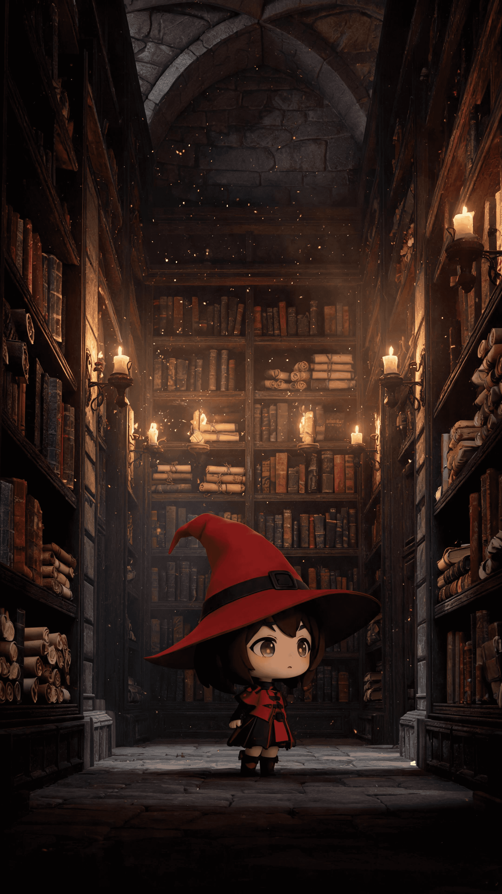
[老魔法师]带你来到一处刻满文字的修道院图书馆。📜
墙壁上的羊皮卷轴描绘着中世纪魔法文明的兴衰——法师们建造了辉煌的学院与城堡，却在争夺圣杯残焰时撕毁誓约，最终让暗雾吞没了王国。
「看到了吗？他们被自己的傲慢吞噬了。」[老魔法师]说道，「与外人无关。是他们自己先背弃了誓言。」
你扫了一眼房间角落，隐约看到一个人影的轮廓，但已经模糊不清了。
【第2章 节点12】🔵 分支选择
你走到一副油画面前，仔细观察。📜
画面已经严重褪色，你只能依稀分辨出几个人影的轮廓——其中一个似乎穿着灰袍，站在一群人面前。但细节已经无法辨认。
[老魔法师]的脸色微微一变。身后传来脚步声——不是他的。
他猛地抓着你的手腕，把你拽进书架与墙壁之间的缝隙。你透过缝隙，看到图书馆尽头出现了那个游荡的存在。😱
这一次，它停下来，似乎在看油画。
【第2章 节点13】🔴 解谜过渡
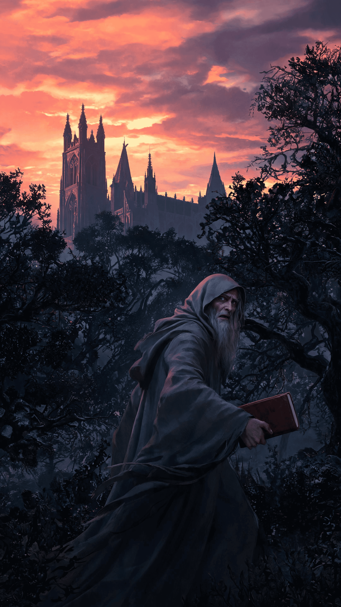
「我们必须走得更快。」[老魔法师]的声音紧绷着，像被拧到极限的弦。
「他出现得越来越频繁了。如果让他接近你——」
「接近我怎样？」你追问。
他回避了你的目光：「你不会想知道的。我们没时间了。」
他转身时，皮革日记从袍子里滑出半截。你看到了上面的名字——那不是[老魔法师]的名字。
━━━ 过渡标题：碎片（key=5303） ━━━
【第2章 节点14】🔴 解谜过渡
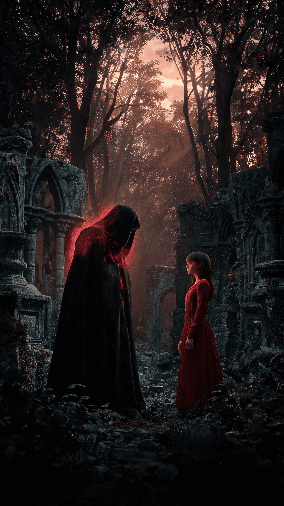
你走出书架缝隙，直面那个存在。他穿着黑色的长袍，面容模糊——但这一次，他没有立刻消失。
他抬起手，指向森林深处一条[老魔法师]从未让你走过的林间小径。然后，他把手掌按在胸口，微微低头。
像是感谢。
你回头找[老魔法师]——他不在了。
你按住袖口里的能量结晶，第一次觉得那个游荡的存在也许不是来伤害你的。
━━━ 过渡标题：碎片（key=5303） ━━━
【第2章 节点15】🔴 解谜过渡
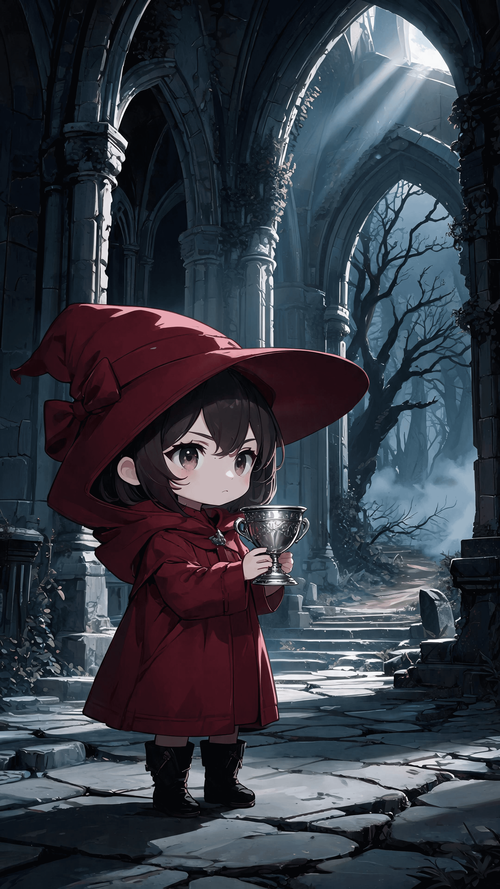
你独自站在[暗影森林]的修道院中。🌲
[老魔法师]又消失了。被抹去的旧脚印、他在暗雾期间的秘密行动、那个游荡存在的低头致意——有些事情不对劲。
你攥紧拳头，看向那条被禁止通行的林间小径。🏃
不管里面藏着什么——你都要亲眼看到。
━━━ 过渡标题：抉择（key=5304） ━━━
第3章：空中花园
【第3章 节点1】🔵 分支选择

你穿过一道星蓝色的光芒，坠入一片悬空的世界。🌌
脚下是层层悬浮的阶梯花园，藤蔓从石台上垂落，缠绕着刻满楔形文字的星象台。远处传来星轨运转的低鸣。
[老魔法师]站在花园最高层的星象台旁，神情比之前紧张得多。
「这是[空中花园]。小心——花园里有些冻结的人影，别碰它们。」
「冻结的人影？」你问。
「不该在这里的人。走吧。」
【第3章 节点2】🔵 分支选择
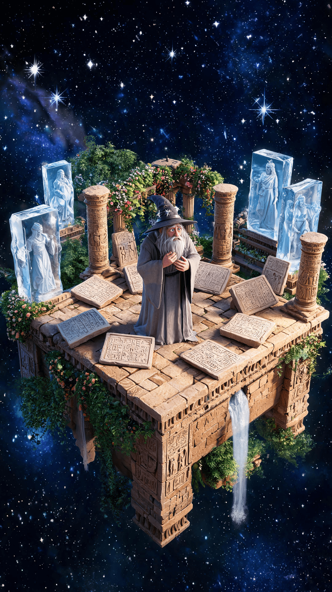
「别问了。」[老魔法师]催促你前进，目光不断扫视四周的星象台，「[空中花园]保存着古巴比伦文明的知识。我需要你帮我取回核心能量。」
「你说你进不去深层。那之前的能量是谁帮你取的？」你停下脚步。
他停顿了一拍。那不是思考的停顿——是被戳中要害的僵硬。
「……不需要你操心这些。走吧。」
他的声音很平稳。但他的手在袍子里攥紧了。
【第3章 节点3】🔵 分支选择

你没有跟上他，而是停下来观察悬空花园。🌌
花园的阶梯上冻结着人影——不是雕像，而是真实的人。他们穿着古巴比伦式的长袍，手中握着星盘和楔形泥板。他们的表情各异，有的惊恐，有的平静。
其中一个披着暗红斗篷的小身影吸引了你的注意——冰霜遮住了她的脸，只露出一点熟悉的帽檐。
【第3章 节点4】🔵 分支选择

「你还不明白危险在哪里。」
「[星蚀]不是日食。它是星轨错位时的能量倒流——星象台会抽走你的意识，像吞没星光一样。你会先忘记自己的名字，然后忘记为什么在这里，最后连自己的存在都忘记。那些冻结的人影，就是这么被钉进星光里的。」
他看着你：「你的红帽子在这里救不了你。星光会照见每一处缝隙，[星蚀]不挑颜色。」
【第3章 节点5】🔵 分支选择

你走近星象台，仔细观察那些冻结的身影。🗿
每一个冻结者的手中都握着一块楔形泥板——他们到死都没有松手。其中一个人的泥板上刻着楔形文字，你辨认出几个字：「……不要相信……他……」
[老魔法师]猛地拉住你的手：「别碰，也别看太久。它们会扰乱你的心智。[幻境]会利用这些残留物侵蚀你的判断力。」
「你在害怕什么？」你问。
他没有回答。
【第3章 节点6】🔴 解谜过渡

「这里的黏质灵体被星象能量强化过——它们会随星轨移动变换位置。」[老魔法师]简短地说，语气明显比在萨满圣原时更急躁。
「星轨每运转一圈，它们就换一次位置。你得在它们移动之前做出判断。」
他忽然压低声音：「还有一件事。如果你在深层星象台中看到披红斗篷的人影——不要触碰。绝对不要。」
「为什么？」
「不需要你知道。」
━━━ 过渡标题：星象（key=6301） ━━━
【第3章 节点7】🔴 解谜过渡
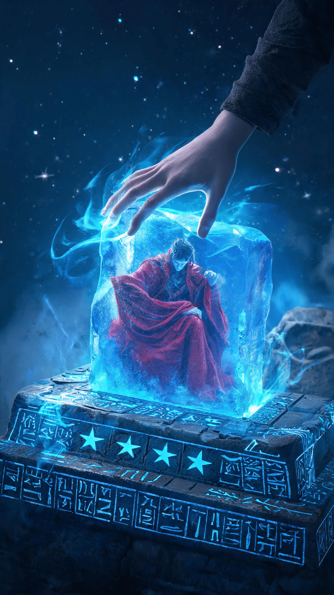
你趁[老魔法师]不注意，走向星象台中那个披红斗篷的身影。你伸出手指，触碰冰晶表面。
冰面传来一阵温热——和周围冻结的寒意完全不同。你感到一种奇异的共鸣，像是认识了很久的人。
震动从星象台传来。冰层下的身影嘴唇微动——你听不到声音，但你能读出她的口型：「他在说谎。」
你猛地缩回手。[老魔法师]就站在你身后。
━━━ 过渡标题：星象（key=6301） ━━━
【第3章 节点8】🔴 解谜过渡

你穿过几层悬浮花园，来到一处巨大的星象观测台。🌌
月光穿透层层藤蔓，在楔形石碑上投下星图般的影子。观测台中央矗立着一座星轨仪，上面放着一卷封冻的星图。
远处，[星蚀]在星轨中蔓延。冻结的人影仿佛在星光下微微转动眼球。
━━━ 过渡标题：欺骗（key=6302） ━━━
【第3章 节点9】🔵 分支选择

[星蚀]退去了。🌌 你的睫毛结了霜，手指冻得发紫。
你趁[老魔法师]不注意，撬开了星轨仪上的星图。楔形文字在寒气中若隐若现：
「幻境核心排斥被贪欲标记的灵魂。他们无法进入深层……只有纯粹的灵魂……」
部分文字已经损坏，你无法读出更多。但这一段已经让你心惊。
远处传来[老魔法师]的声音：「你在那里做什么？」你迅速合上星图。
【第3章 节点10】🔵 分支选择
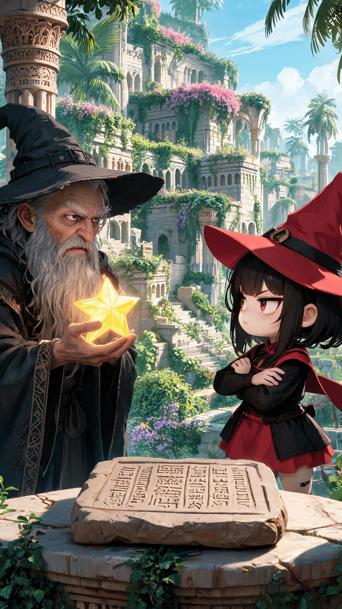
你刚想再看清星图上的下一行字，身后就响起[老魔法师]的声音。
「你在翻什么？」他走到你面前，目光锐利。
「没什么。」你低下头。
他盯着你看了很久。星轨仪忽然轻响，一块温热的星石从裂开的铜环中滚落到你脚边。
「能量结晶。」他说，声音压得很低，「看来星象台也承认你。」
你拾起能量结晶。它确实温热。
【第3章 节点11】🟢 剧情

[老魔法师]带你来到一处刻满楔形文字的星象殿。📜
泥板上记载着古巴比伦文明的历史——他们曾经建造辉煌的空中花园与星象台，利用星轨能量保存知识。但有一天，一个外来者说服祭司们打开星核，承诺让知识永不消亡。星核失衡后，整座花园在一夜之间被自己的光冻结。
「看到了吗？是他们的傲慢。」[老魔法师]说道。
【第3章 节点12】🔵 分支选择
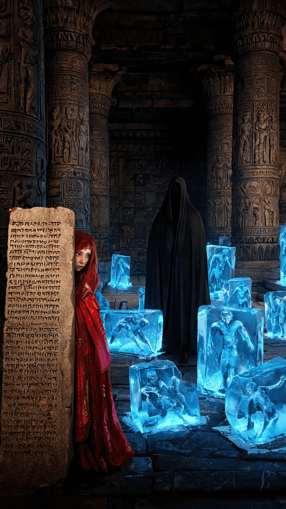
你靠近那行楔形小字，想看清楚更多。📜
「外来者身披灰袍，年迈苍老……他无法触碰星核能量，于是带走了我们的孩子……」
你的血液凉了——不是因为寒冷。
[老魔法师]的声音从背后传来，不再平静：「你看得够多了。」
身后传来脚步声。他一把拉着你蹲到泥板后面，手掌按在你肩上——力道比预想的大得多。你透过泥板边缘，看到那个游荡的存在正沿着走廊走来。它没有四处张望——它径直朝你们藏身的方向走来。😱
【第3章 节点13】🔴 解谜过渡
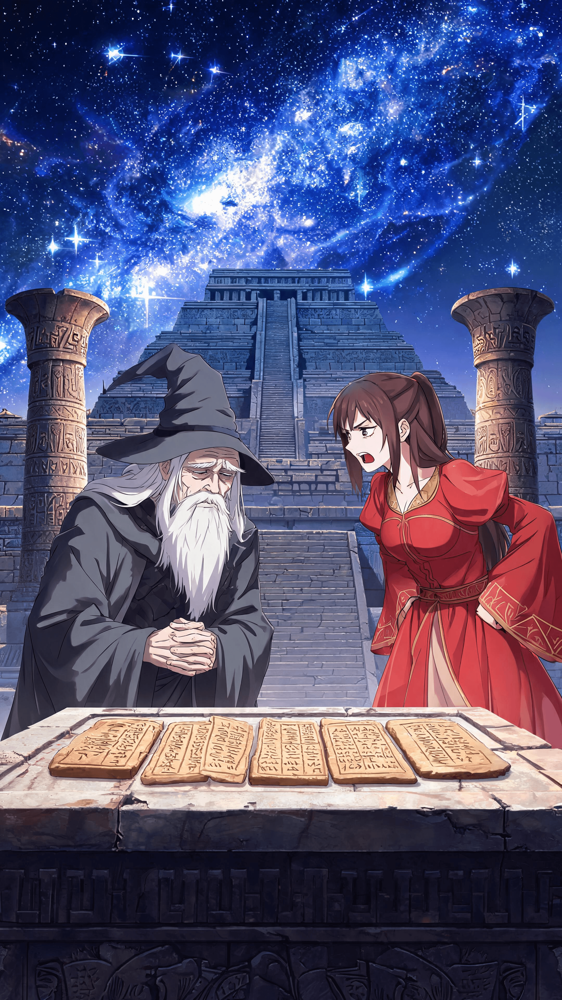
「那些文字——那不是真相。是被星蚀困住的人留下的怨恨。」[老魔法师]的声音压得很低，语速比平时快了一倍。
「被困住的人？」你盯着他，「你之前说我是第一个。那他们是谁？」
他移开目光。喉结动了一下，像是在咽回什么。
「……能量够了，你的记忆就会回来。相信我。」
他的声音在发抖。你分不清是寒冷还是心虚。但他没有否认那些红色残影的存在。
━━━ 过渡标题：记忆（key=6303） ━━━
【第3章 节点14】🔴 解谜过渡
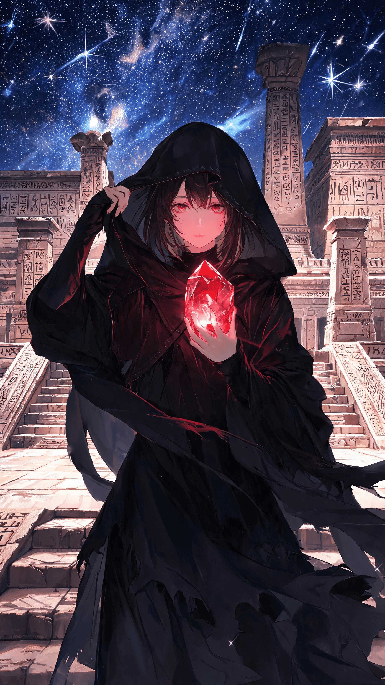
你走出泥板后面，直面那个存在。他穿着黑袍——但这一次，他没有转身离开。
他缓缓摘下兜帽。面容模糊，但你在他眼中看到了悲伤。他伸出手，掌心浮着一颗红色结晶——和你的能量结晶一模一样，但更古老、更暗淡。
你明白了。他是之前的你。被消耗殆尽后留下的残影。
你回头找[老魔法师]。他已经不在了。
━━━ 过渡标题：记忆（key=6303） ━━━
【第3章 节点15】🔴 解谜过渡
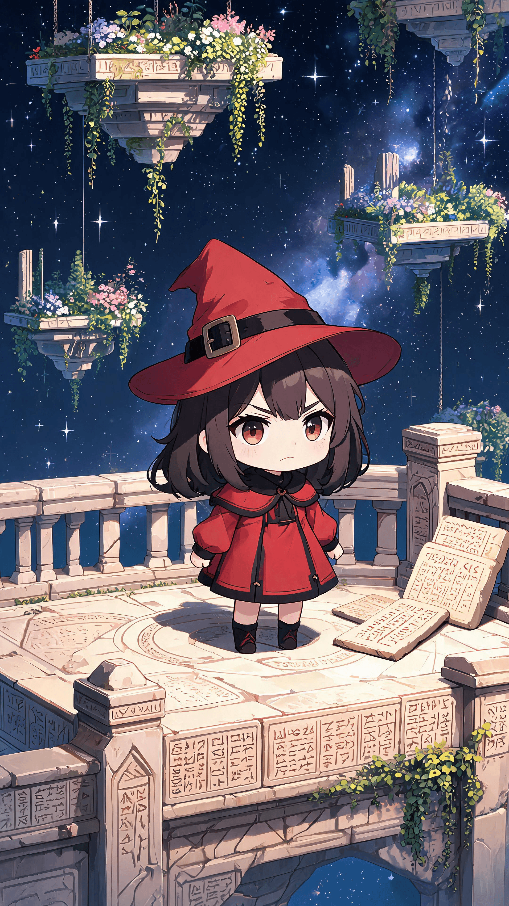
你独自站在[空中花园]的星象台上。🌌
红斗篷身影的口型、星图上的文字、[老魔法师]每次的回避——碎片正在拼向一个你还不敢相信的答案。
你攥紧拳头，向星象台深处走去。🏃
你要找到真相——和离开这里的方法。
━━━ 过渡标题：决心（key=6304） ━━━
第4章：诸神殿堂
【第4章 节点1】🔵 分支选择
你穿过赤红色的光芒，坠入一片圣洁的世界。🏛️
巨大的大理石柱矗立在云雾之上，科林斯式柱头雕着精美的莨苕叶。远处矗立着一座完整的帕特农式神殿，三角楣上雕刻着诸神的浮雕。
[老魔法师]站在神殿中央，不再伪装平静。他的眼中是你从未见过的急切。
「[诸神殿堂]的核心保存着幻境最强大的能量。」
「这地方到底是谁造的？」你说。
他摇头：「我也不知道。我只是发现了它。」
【第4章 节点2】🔵 分支选择
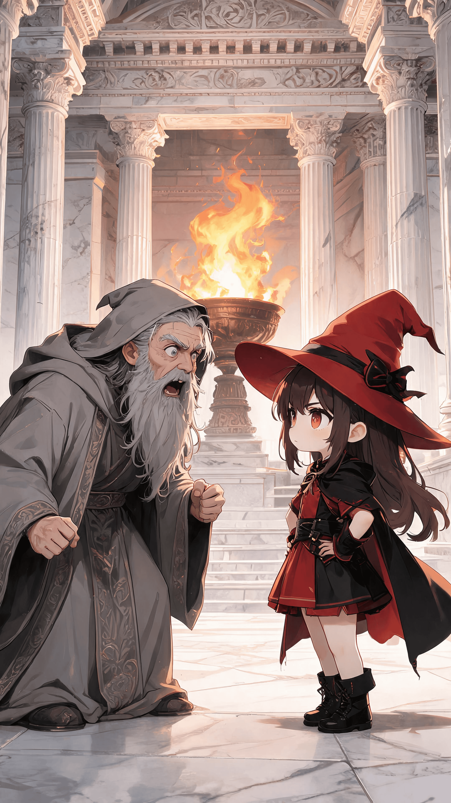
「你已经猜到后面发生了什么？」[老魔法师]的笑容不带任何温度。
「没关系。反正这是最后一次了。」
他指向神殿深处：「[诸神殿堂]的核心能量就在最深处。你替我把它取出来——然后一切就结束了。」
「对你来说结束。对我呢？」你问。
「你会忘掉一切。每次都一样。」他不再隐瞒了。
【第4章 节点3】🔵 分支选择
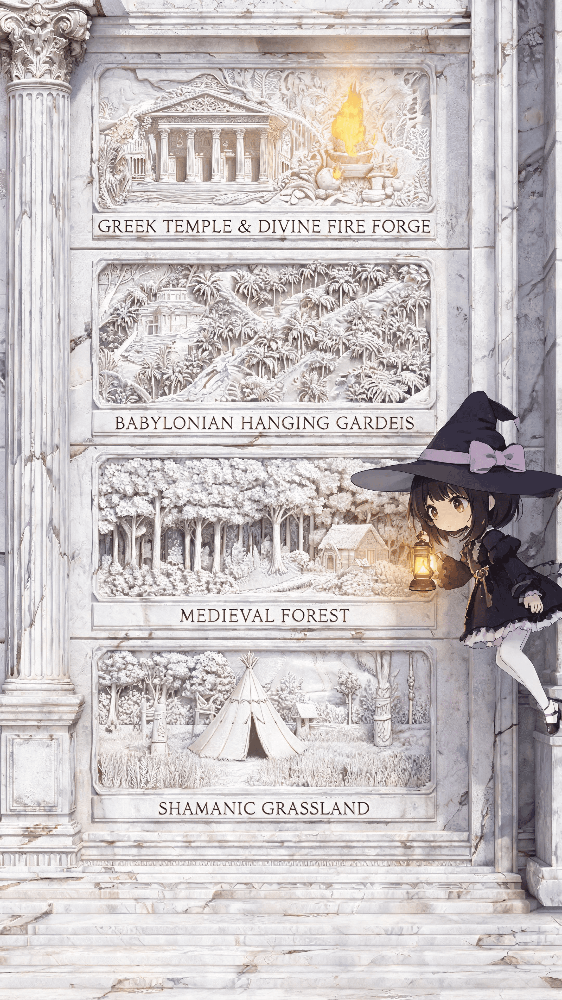
你站在原地，打量着这座神殿。🏛️
墙壁上的浮雕讲述着一段无人能确认的历史：幻境的核心汇聚着失落文明的能量，分四层遗迹——草原、森林、花园、神殿。浮雕上没有建造者的形象，只有一句话反复出现：「核心排斥被贪欲标记的灵魂。」
[老魔法师]的声音从远处传来：「我发现了这个地方。但我进不去深层——能量排斥我。所以我需要你替我进去。」
「看够了吗？该结束了。」
【第4章 节点4】🔵 分支选择
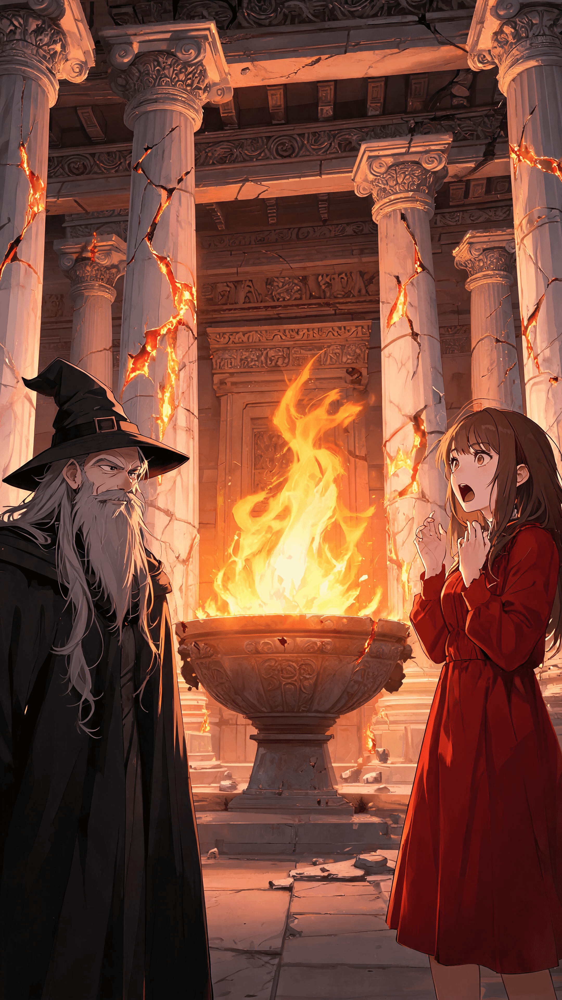
「你现在才问危险？」他冷笑。
「[神火]是奥林匹斯的审判之焰——会把一切凡物烧成灰烬，也会照出凡物最贪婪的那一面。」
他看着你：「你以为失忆是副作用？」他的语气忽然变得近乎温柔，「不。失忆是因为你的能量被抽干了——意识会崩溃。我只是在修复你。」
「修复？」你的声音在发抖，「你是在重置我。」
他沉默了一瞬。然后耸了耸肩：「效果是一样的。」
【第4章 节点5】🔵 分支选择
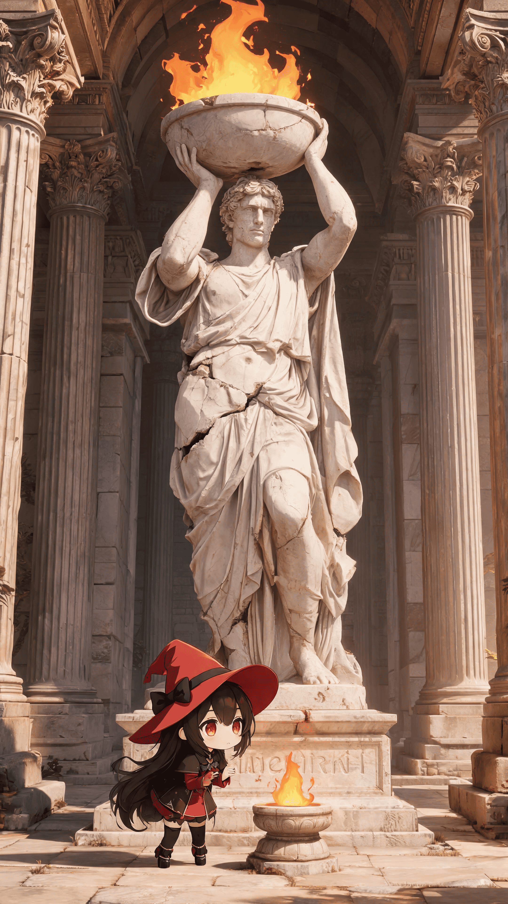
你走向墙边的一座雕像。🗿
这座神殿的守护者双手托着一只火盆，高高举过头顶。底座上刻着一行希腊文，但已经被磨损——看不清是「建造者」还是「发现者」。
「这刻的是什么？」你问。
「我不确定。」[老魔法师]的声音在背后响起，「这座幻境的来历，连我也不完全清楚。我只知道它的核心保存着巨大的能量——而我能做的，就是找到能进去的人。」
【第4章 节点6】🔴 解谜过渡
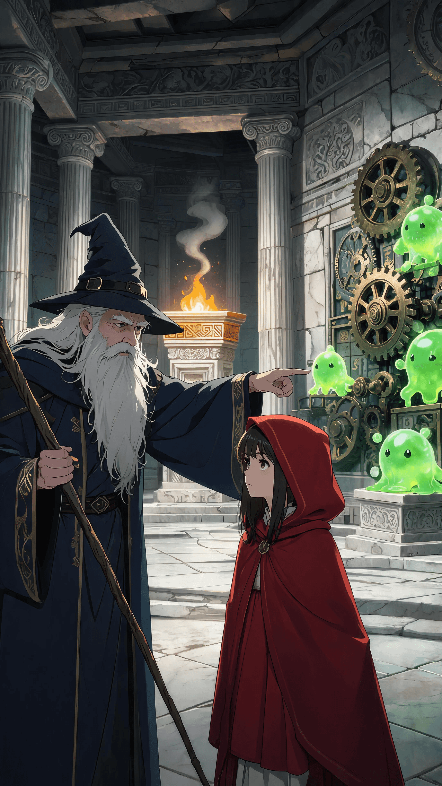
「但这一次不同。」[老魔法师]不再伪装耐心，「你把能量交给我。不是为了离开——是为了把核心交到我手上。」
他压低声音：「如果你拒绝，幻境会崩塌。你会消失。」
「这是威胁吗？」
「这是事实。我无法保证能再把你重置一次——你的能量已经接近极限了。」
━━━ 过渡标题：神殿（key=7301） ━━━
【第4章 节点7】🔴 解谜过渡
你走向那座雕像，伸手触碰它。灼热的大理石传来震动——不是排斥，而是共鸣。
一段完整的记忆涌入：你看到了自己第一次被带进幻境时的画面——你站在萨满圣原的草原上，身边是更年轻的[老魔法师]。他说「帮我收集能量，我就送你回家。」
你那时相信了他。然后你忘了。然后他又带了你一次。又忘了。又带了。
你转身看他。他老了。你却还是同一个你。
━━━ 过渡标题：神殿（key=7301） ━━━
【第4章 节点8】🔴 解谜过渡
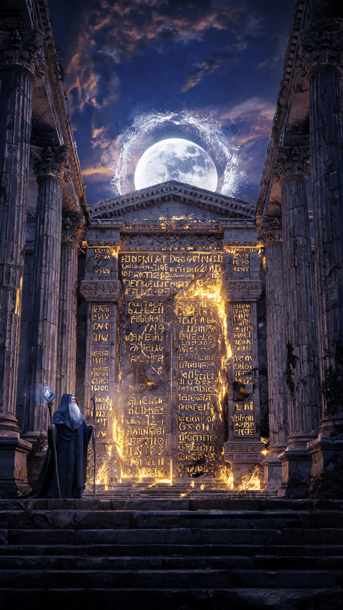
你穿过几条柱廊，来到神殿核心的前厅。🏛️
银光与赤红神火交织，照亮了前厅正中央的一扇巨大的门——核心之门。门上刻满了希腊符文，需要一个红色能量载体才能打开。
「那就是你来的目的。」[老魔法师]站在门旁，「清除最后一批守门灵体，把能量带到这里。打开它。」
远处，[神火]在神殿地脉中涌动。
━━━ 过渡标题：谎言（key=7302） ━━━
【第4章 节点9】🔵 分支选择
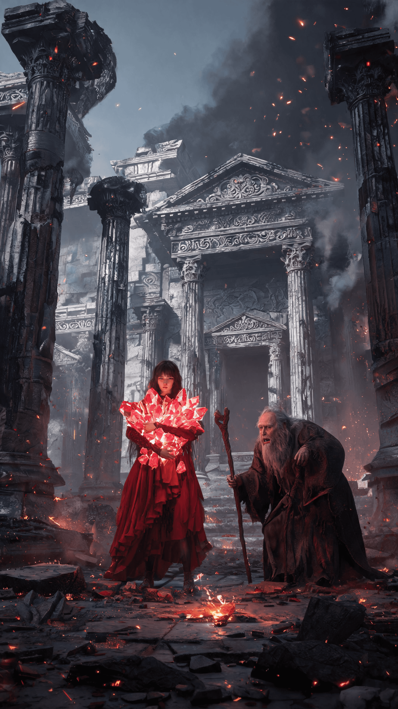
[神火]退去了。🏛️ 你浑身被汗水浸透，但手中的能量结晶比之前任何一次都多。
你站在核心之门前。[老魔法师]就站在你旁边，呼吸急促。他比之前任何时候都更接近核心。
「快。把能量放上去。」他催促道。
你没有动。你在等。
身后传来脚步声——那个游荡的存在，再一次出现了。
【第4章 节点10】🔵 分支选择
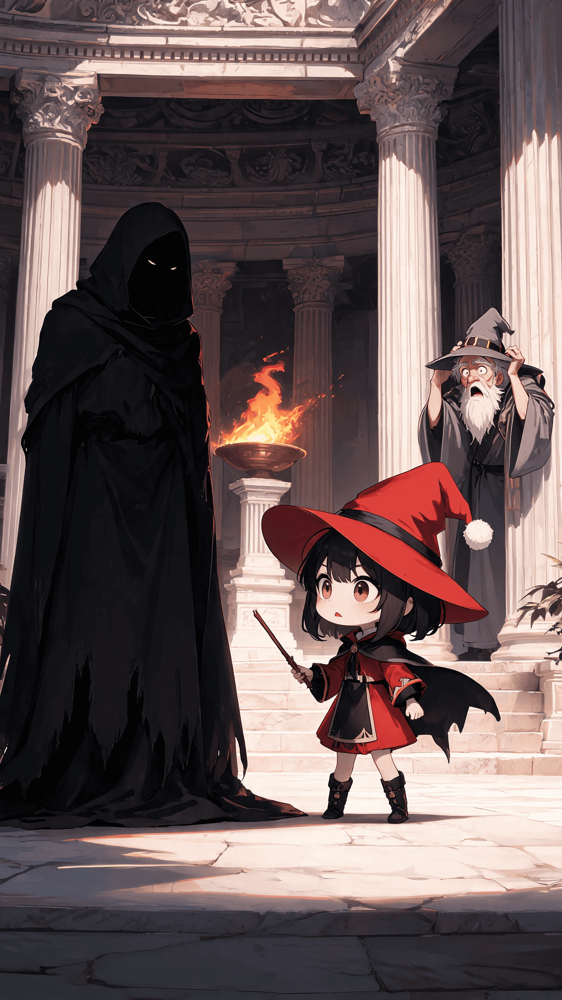
「你在等什么？」[老魔法师]的耐心耗尽了。
「我在等他。」你转向那个存在的方向。
[老魔法师]的脸色剧变：「不——别听他的。他只是残留的影子，只会把你拖进崩塌里。」
「残留的影子？」你看着那个存在缓缓走近，「还是你不愿意让我看到的真相？」
那个存在站到了你面前。这一次，他开口了。
【第4章 节点11】🔵 分支选择
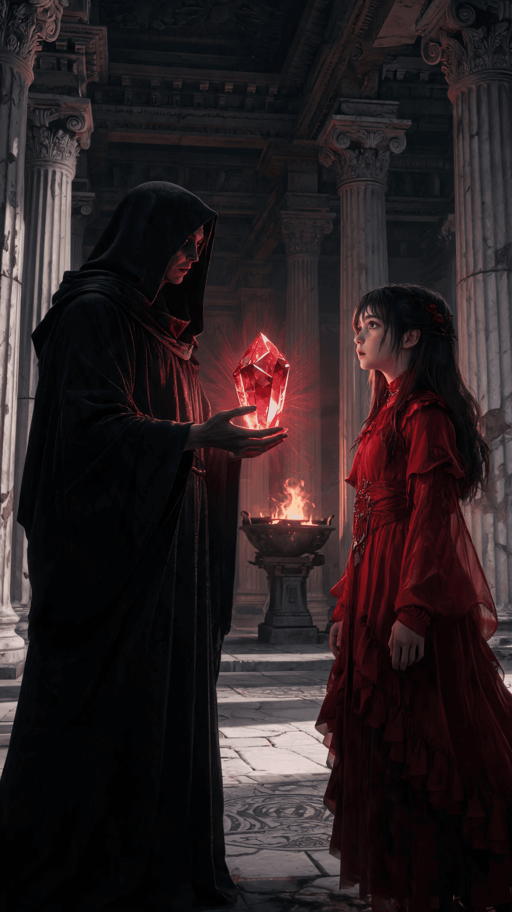
那个存在开口了，声音像岩浆翻滚：📜
「我是最初的你。被带进幻境的第一个人。」
「他用我的能量打开了暗影森林的深层。然后我的能量耗尽了。他重置了我。」他摊开手掌，红色结晶的暗光映在他脸上，「但我没有完全消失。我变成了幻境的一部分——游荡在这四层遗迹之间，看着一个又一个「你」被带来、被消耗、被重置。」
他看着你：「这地方是谁造的、为什么存在——我不知道。但我知道他不是创造者。他只是发现了这里，然后利用了它。」
「你手上的能量足够打开核心之门。但不要给他。用那股能量打破幻境——让我们都自由。」
【第4章 节点12】🔵 分支选择
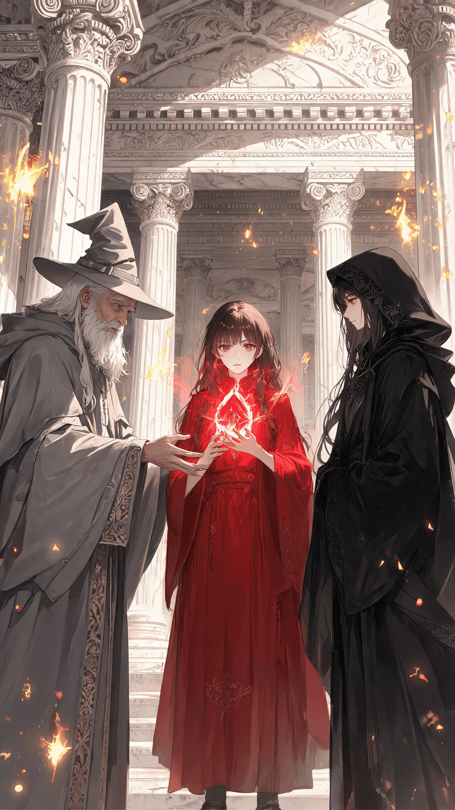
你站在核心之门前，手握能量结晶。📜
[老魔法师]在你左边，伸着手：「把能量给我。我送你回家。这是最后一次——我发誓。」
最初的残影在你右边：「打破幻境。所有被困的能量都会释放——包括所有被消耗的「你」。但幻境会崩塌，你可能无法离开。」
你低头看着手中的结晶。它是红色的——和帽檐下那点熟悉的光一样。你的能量，你的生命。
这一次，没有人替你做选择。
【第4章 节点13】🔴 解谜过渡
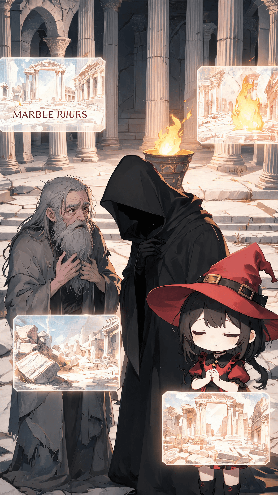
「你想清楚。」[老魔法师]的声音变得冰冷，「打破幻境，你也可能消失。把能量给我，至少你还能活着出去——忘掉一切，但活着。」
最初的残影摇头：「他会重置你。再来一次。你愿意吗？」
你闭上眼睛。草原上图腾柱的影子、森林中废弃教堂的钟声、花园里楔形泥板的寒气、神殿中诸神的浮雕——四层遗迹的记忆在你脑海中翻涌。
你睁开眼。
━━━ 过渡标题：真相（key=7303） ━━━
【第4章 节点14】🔴 解谜过渡
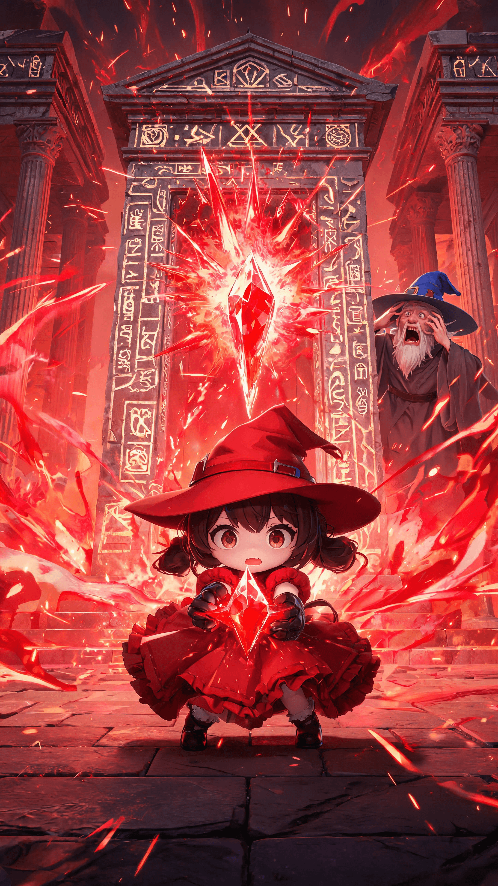
你做出了选择。
你将能量结晶举向核心之门——不是交付，而是击碎门上的束缚。
[老魔法师]冲过来：「不——！」
但已经来不及了。能量结晶撞上核心之门，红色的光芒瞬间吞噬了整个神殿。你感到手中的能量在沸腾——那不是你独自使用它，而是所有被消耗的「你」在回应。
萨满圣原、暗影森林、空中花园、诸神殿堂——四层遗迹的封印同时开始崩裂。
━━━ 过渡标题：真相（key=7303） ━━━
【第4章 节点15】🔴 解谜过渡
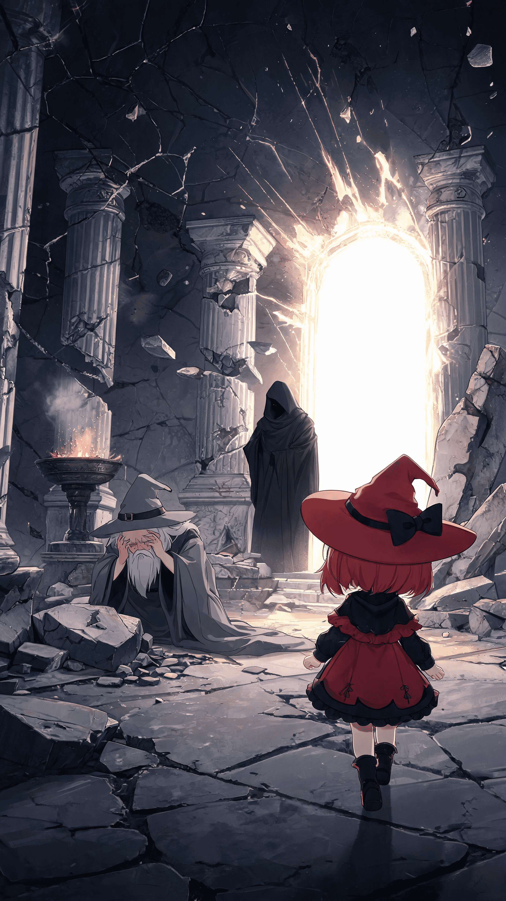
幻境在崩塌。🏛️
无数意识从四层遗迹中涌出——那些被消耗的「你」，那些被带走的红帽孩子，所有被困的能量都在回归。
[老魔法师]跪在地上，看着崩塌的柱子。苍老的面容终于露出了对虚无的恐惧。
「你毁了一切……我花了千年找到的一切……」
「你该停下了。」最初的残影站在他面前，「够了。」
你转身走向出口。面前是一束你从未见过的光。🏃
幻境是谁造的、为什么存在——也许你永远不会知道。但你知道：这一次，你的每一步都是自己选的。
这是你的选择。也是你夺回来的名字。
━━━ 过渡标题：终选（key=7304） ━━━
🏁 全剧终
幻境之序 — 这是你的选择，也是你夺回来的名字。